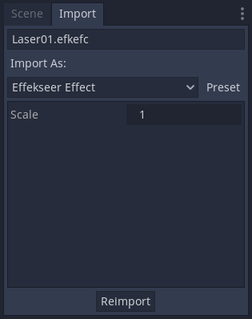
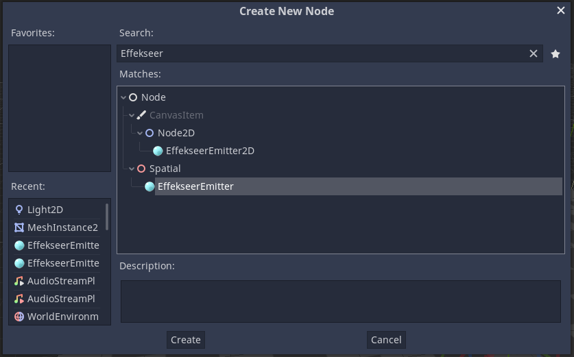
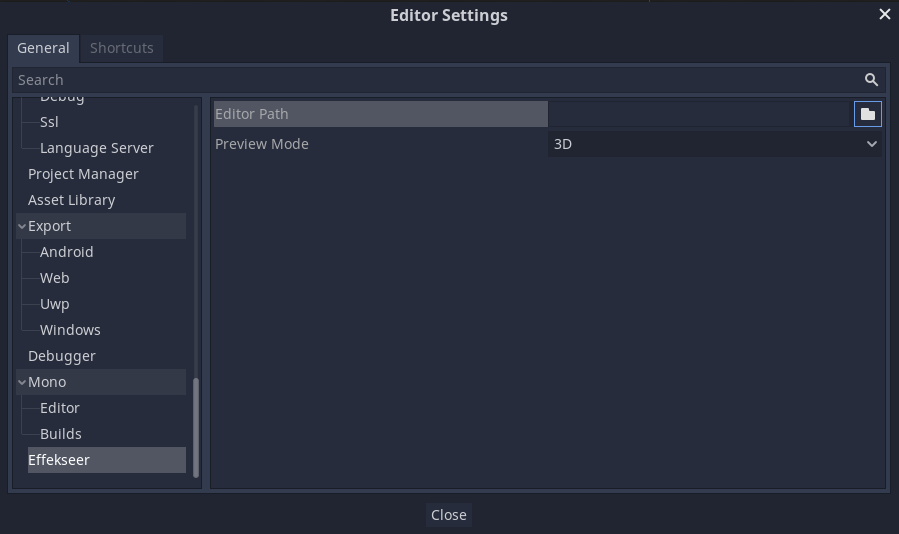

How to use¶
*Some of the images are for Godot3.
Install the effekseer plugin¶
Download the latest pre-built plugin from here.
Copy the addons directory in the zip into your Godot project.

Enable Status for Effekseer for Godot on the Plugins tab of Project Settings.

This completes the plugin installation.
Resources¶
Copy your effect files (*.efkefc), textures, sounds, materials, etc. into the res:// of your Godot project.

Import effects¶
The *.efkefc file is imported as a Godot resource.
If successful, subresources such as textures, models and materials will be linked as shown above.

If the subresource is not linked, try re-importing.

scale setting¶
Sometimes the size of the loaded effect is small and you want to adjust the size. In that case, select the efkefc file, change the scale parameter on the Import tab and press the Reimport button.
You can change the size of the effect by changing the Scale of EffekseerEmitter, but this method may not be magnified depending on the effect settings.
How to use in 3D scenes¶
Use an emitter (EffekseerEmitter) to emit the imported effect in a 3D scene. Emitters are the source of effects and are used by placing them in a 3D scene.
To play the imported effect file, add Node with EffekseerEmitter attached to the node tree.
First, add a Node with the EffekseerEmitter attached to the node tree. (Since it is 3D, it is EffekseerEmitter under Spatial)

EffekseerEmitter has been added.

Then drag and drop the imported effect into the Effect property to specify it.

Since Autoplay is checked, the effect will be displayed when you run the scene.

Emitter’s inspector¶

| Property | Description |
|---|---|
| Effect | Sets the effect resource to play on the emitter |
| Autoplay | If checked, the effect will be played automatically at the start of the scene (_ready () timing) |
| Paused | Set the pause state during playback |
| Speed | Set the playback speed of the effect |
| Color | Set the color of the effect |
How to use in 2D scenes¶
Use an emitter (EffekseerEmitter2D) to emit the imported effect in a 2D scene. Emitters are the source of effects and are used by placing them in a 2D scene.
To play the imported effect file, add Node with EffekseerEmitter2D attached to the node tree.
First, add a Node with the EffekseerEmitter2D attached to the node tree. (Since it is 3D, it is EffekseerEmitter2D under Node2D)
EffekseerEmitter2D has been added.

Then drag and drop the imported effect into the Effect property to specify it.

Since the coordinate base of the 2D scene is pixels, specify the scale of Transform2D.
Since Autoplay is checked, the effect will be displayed when you run the scene.

If the effect looks different than you expected, adjust orientation.
For orientation, you can specify the angle of rotation for each XYZ axes.

The effect was displayed in the correct orientation.

Emitter2D’s inspector¶
| Property | Description |
|---|---|
| Effect | Sets the effect resource to play on the emitter |
| Autoplay | If checked, the effect will be played automatically at the start of the scene (_ready () timing) |
| Paused | Set the pause state during playback |
| Speed | Set the playback speed of the effect |
| Color | Set the color of the effect |
| Orientation | Set the 3D orientation of the effect |
Project settings¶
You can configure Effekseer’s overall settings from Godot’s project settings.

| Property | Description |
|---|---|
| Instance Max Count | Maximum number of instances generated by a node at the same time |
| Square Max Count | Maximum number of rectangles used for drawing at the same time |
| Draw Max Count | Maximum number of draw calls at the same time |
| Sound Script | Script used for sound playback. Can be replaced |
Previewing an effect¶
When you select an efkefc file imported into Godot, you can preview and play it on the Inspector.
And press “Open in Effekseer” to open the efkefc file in Effekseer.
To use this feature, you need to set the path to the Effekseer tool in the Effekseer section of the editor settings.
